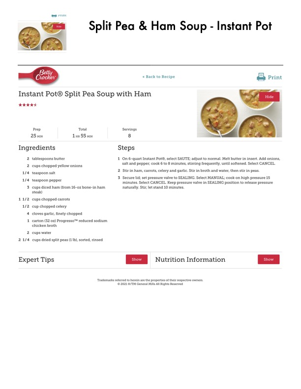

Instant Pot® Split Pea Soup with Ham

Original cookbook page 172
A hearty split pea soup made in the Instant Pot with ham, vegetables, and perfectly cooked split peas
Prep: 25 min • Cook: 30 min • Total: 1 hr 55 min
Ingredients
- 2 tablespoons butter
- 2 cups chopped yellow onions
- 1/4 teaspoon salt
- 1/4 teaspoon pepper
- 3 cups diced ham (from 16-oz bone-in ham shank)
- 1 1/2 cups chopped carrots
- 1/2 cup chopped celery
- 4 cloves garlic, finely chopped
- 1 carton (32 oz) Progresso™ reduced sodium chicken broth
- 2 cups water
- 2 1/4 cups dried split peas (1 lb), sorted, rinsed
Instructions
- On 6-quart Instant Pot®, select SAUTE; adjust to normal. Melt butter in insert. Add onions, salt and pepper; cook 6 to 8 minutes, stirring frequently, until softened. Select CANCEL.
- Stir in ham, carrots, celery and garlic. Stir in broth and water, then stir in peas.
- Secure lid; set pressure valve to SEALING. Select MANUAL; cook on high pressure 15 minutes. Select CANCEL. Keep pressure valve in SEALING position to release pressure naturally. Stir; let stand 10 minutes.
Recipe #172 from collection